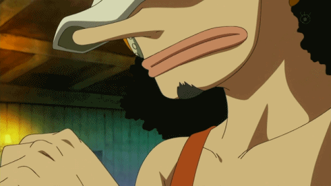

Who is Usopp?
Usopp, also known as "Sogeking," is one of the main characters in the anime and manga series, One Piece. He is a member of the Straw Hat Pirates and serves as their sniper. Usopp is known for his long nose and his tendency to exaggerate stories and events, which often leads to him being called a liar by his fellow crewmates.
Despite his tendency to lie, Usopp is a skilled marksman and a valuable member of the crew. He is able to shoot with incredible accuracy, even from long distances, and is known for using a variety of unique and creative weapons in battle. Usopp also has a strong sense of loyalty to his friends and will go to great lengths to protect them, even if it means putting himself in danger.
Throughout the series, Usopp undergoes significant character development. He starts off as a cowardly and insecure character who is often afraid to take risks or face danger. However, as the series progresses, he becomes braver and more confident, eventually becoming a true hero in his own right. Usopp's growth as a character is one of the most compelling aspects of One Piece, and his journey from a timid liar to a brave warrior is one of the most inspiring storylines in the series.